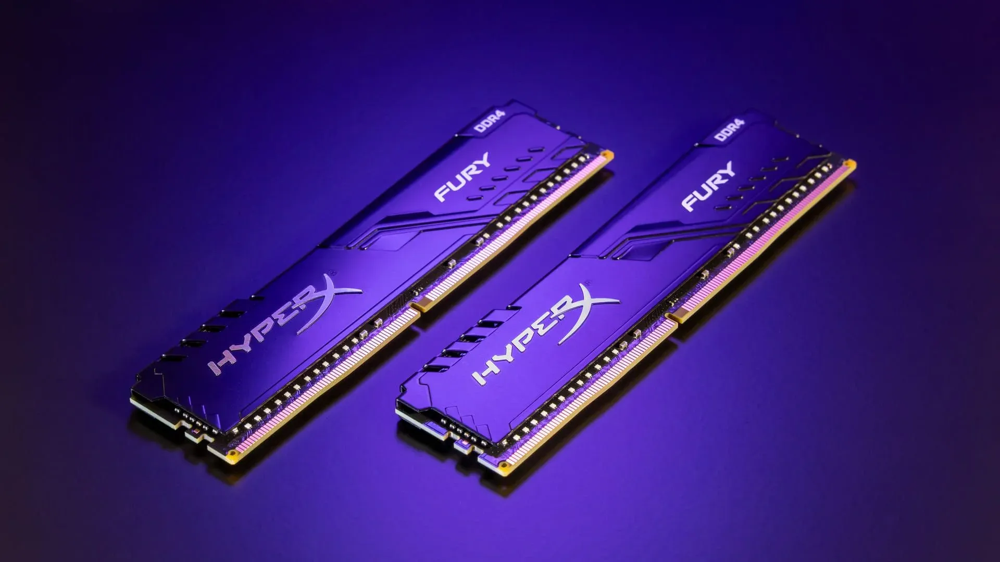

A Memória de acesso aleatório (RAM) é um espaço temporário de informações do sistema operacional e de aplicativos em uso, e quando a tarefa é concluída, os arquivos são movidos da memória RAM para serem mantidos no SSD. A RAM é usada para armazenar informações que precisam ser usadas rapidamente. Isso significa que provavelmente muita RAM será usada ao abrir muitos programas, executar vários processos ou acessar vários arquivos simultaneamente.

Fonte: TechTudo
Memória ROM
ROM é a memória não volátil, o que significa que as informações são permanentemente armazenadas no chip. A memória não depende de uma corrente elétrica para salvar os dados, em vez disso, os dados são gravados em células individuais usando o código binário.
Memória CACHE
A memória cache é uma parte essencial do processador de computadores e dispositivos móveis. Ela atua como uma memória temporária, permitindo que o processador recupere rapidamente os dados sem a necessidade de uma busca direta na memória principal, a RAM
Memória FLASH
A memória flash é uma tecnologia de armazenamento de dados que usa uma memória não volátil. Isso quer dizer que nada é perdido quando é desligado, além de não exigir partes móveis ou uso excessivo de energia para funcionar. Esse tipo de memória retém dados por um longo período de tempo.